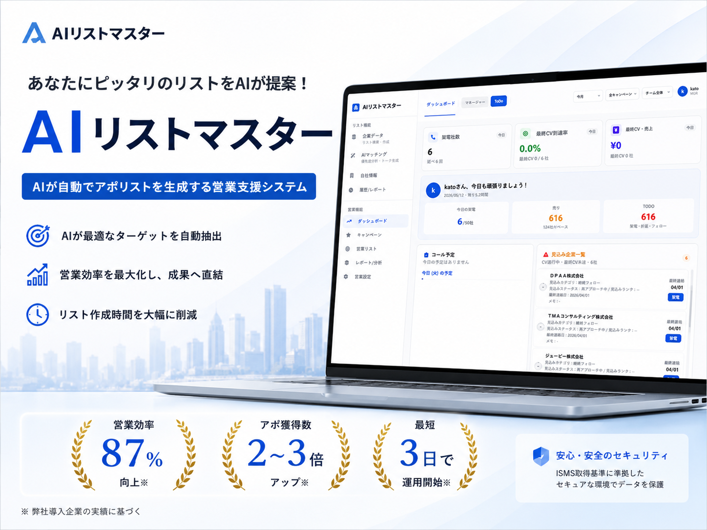
AIリストマスター
あなたにピッタリのリストをAIが提案！
AI リストマスター
AIが自動でアポリストを生成する営業支援システム
AIが最適なターゲットを自動抽出
営業効率を最大化し、成果へ直結
リスト作成時間を大幅に削減
営業効率
アポ獲得数
87%
2〜3倍
最短
3日で
向上※
アップ※
運用開始※
安心・安全のセキュリティ
ISMS取得基準に準拠した
セキュアな環境でデータを保護
※ 弊社導入企業の実績に基づく
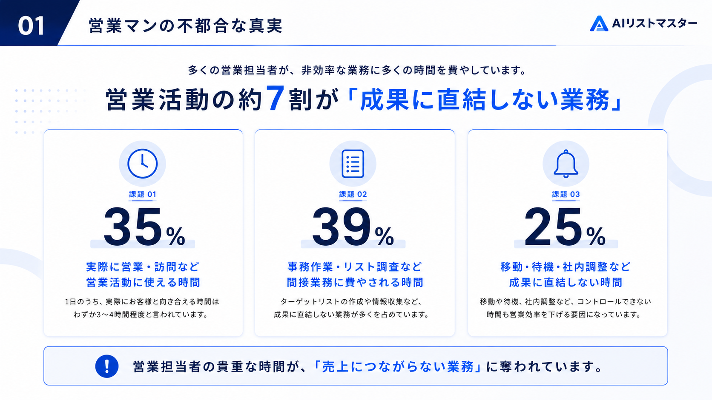
01
営業マンの不都合な真実
AIリストマスター
多くの営業担当者が、非効率な業務に多くの時間を費やしています。
営業活動の約7割が「成果に直結しない業務」
統計 01
35%
業務に営業・訪問など、営業活動に使える時間
1日のうち、実際にお客様と向き合える時間はわずか！ターゲット4時間弱程度に収まります
統計 02
39%
書類作業・リスト調査など、間接業務に費やされる時間
ターゲットリストの作成や情報収集のために、多くの時間が使われています
統計 03
25%
移動・待機・社内調整など、成果に直結しない時間
移動作業、社内連絡など、コントロールできない時間も営業効率を下げています
営業担当者の貴重な時間が、「売上につながらない業務」に奪われています。
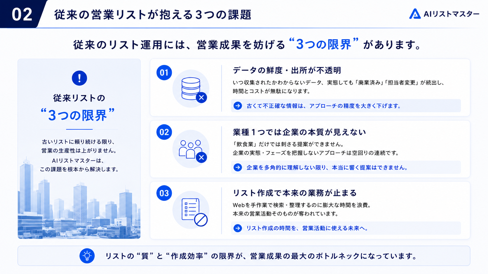
02
従来の営業リストが抱える3つの課題
AIリストマスター
従来のリスト運用には、営業成果を妨げる「3つの限界」があります。
従来のリストの3つの限界
古いリストに頼り続ける限り、営業の成果性は上がりません。AIリストマスターは、この課題を根本から解決します。
01
データの鮮度・出所が不透明
いつ作られたかわからないリストで、「鮮度」も「出所」も不明確です。
古くて不正確な情報が多く、精度の低いアプローチになってしまいます。
02
業種1つでは企業の本質が見えない
単一業種での絞り込みは不十分で、企業の実態が把握できません。
企業規模・フェーズを考慮しないリストアプローチは行き違いが連続します。
03
リスト作成で本来業務が止まる
Web手作業で検索・整理するため、本来業務が疎かになります。
未入力コストと手間が大きく、生産性が低下しています。
リストの「質」と「作成効率」の限界が、営業成果の最大のボトルネックになっています。
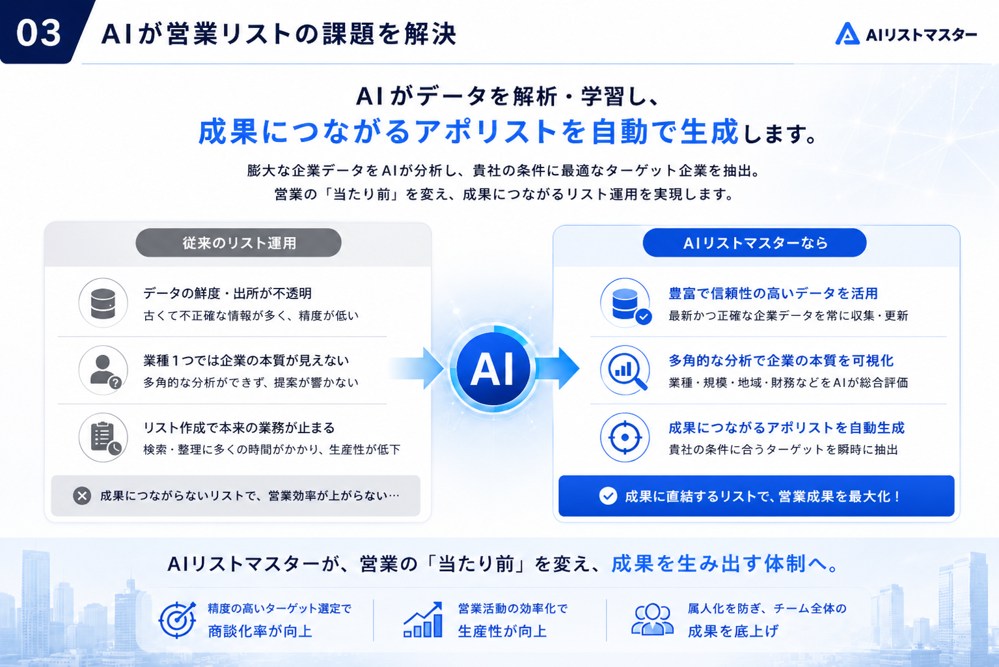
03
AIが営業リストの課題を解決
AIリストマスター
AIがデータを解析・学習し、
成果につながるアポリストを自動で生成します。
膨大な企業データをAIが分析し、貴社の条件に最適なターゲット企業を抽出。
営業の「当たり前」を変え、成果につながるリスト運用を実現します。
従来のリスト運用
データの鮮度・出所が不透明
古くて不正確な情報が多く、精度が低い
業種1つでは企業の本質が見えない
多角的な分析ができず、提案が響かない
リスト作成で本来業務が止まる
検索・整理に多くの時間がかかり、生産性が低下
成果につながらないリストで、営業効率が上がらない…
AIリストマスターなら
豊富で信頼性の高いデータを活用
最新かつ正確な企業データを常に収集・更新
多角的な分析で企業の本質を可視化
業種・規模・地域・財務などをAIが総合評価
成果につながるアポリストを自動生成
貴社の条件に合うターゲットを瞬時に抽出
成果に直結するリストで、営業成果を最大化！
精度の高いターゲット選定で
商談化率が向上
営業活動の効率化で
生産性が向上
属人化を防ぎ、チーム全体の
成果を底上げ
AIリストマスターが、営業の「当たり前」を変え、成果を生み出す体制へ。
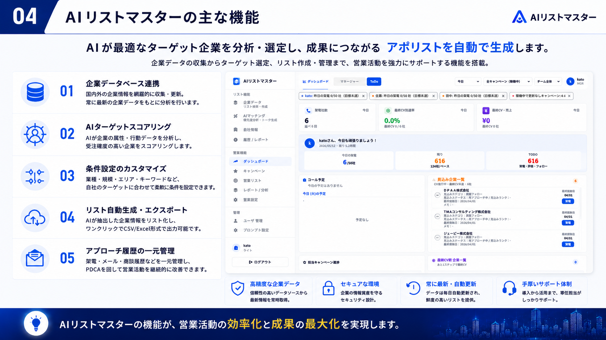
04
AIリストマスターの主な機能
AIリストマスター
AIが最適なターゲット企業を分析・選定し、成果につながる アポリストを自動で生成します。
企業データの収集からターゲット選定、リスト作成・管理まで、営業活動を強力にサポートする機能を搭載。
企業データベース連携
国内外の企業情報を網羅的に収集・更新。常に最新の企業データをもとに分析を行います。
AIターゲットスコアリング
AIが企業の属性・行動データを分析し、受注確度の高い企業をスコアリングします。
条件設定のカスタマイズ
業種・規模・エリア・キーワードなど、自社のターゲットに合わせて柔軟に条件を設定できます。
リスト自動生成・エクスポート
AIが抽出した企業情報をリスト化し、ワンクリックでCSV/Excel形式で出力可能です。
アプローチ履歴の一元管理
架電・メール・商談履歴などを一元管理し、PDCAを回して営業活動を継続的に改善できます。
高精度な企業データ
信頼性の高いデータソースから最新情報を常時取得。
セキュアな環境
企業の情報資産を守るセキュリティ設計。
常に最新・自動更新
データは毎日自動更新され、鮮度の高いリストを提供。
手厚いサポート体制
導入から活用まで、専任担当がしっかりサポート。
AIリストマスターの機能が、営業活動の効率化と成果の最大化を実現します。
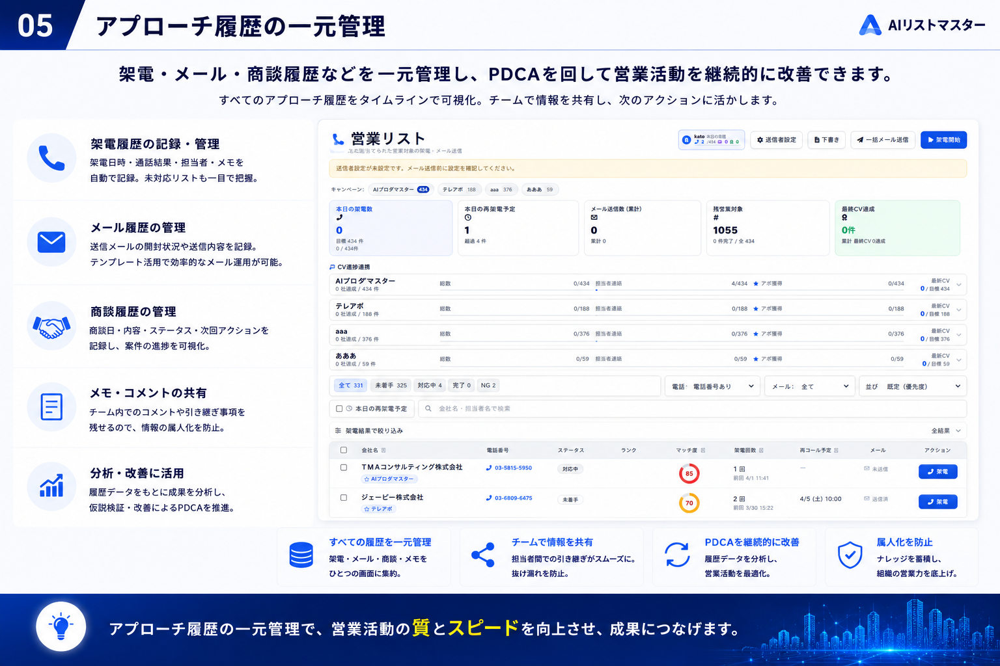
05
アプローチ履歴の一元管理
AIリストマスター
架電・メール・商談履歴などを一元管理し、PDCAを回して営業活動を継続的に改善できます。
すべてのアプローチ履歴をタイムラインで可視化。チームで情報を共有し、次のアクションに活かします。
架電履歴の記録・管理
架電日時・通話結果・担当者・メモを自動で記録。未対応リストも一目で把握。
メール履歴の管理
送信メールの開封状況や返信内容を記録。テンプレート活用で効率的なメール運用が可能。
商談履歴の管理
商談日・内容・ステータス・次回アクションを記録し、案件の進捗を可視化。
メモ・コメントの共有
チーム内でのコメントや引き継ぎ事項を残せるので、情報の属人化を防止。
分析・改善に活用
履歴データをもとに成果を分析し、仮説検証・改善によるPDCAを推進。
すべての履歴を一元管理
架電・メール・商談・メモをひとつの画面に集約。
チームで情報を共有
担当者間の引き継ぎがスムーズに。抜け漏れを防止。
PDCAを継続的に改善
履歴データを分析し、営業活動を最適化。
属人化を防止
ナレッジを蓄積し、組織の営業力を底上げ。
アプローチ履歴の一元管理で、営業活動の質とスピードを向上させ、成果につなげます。
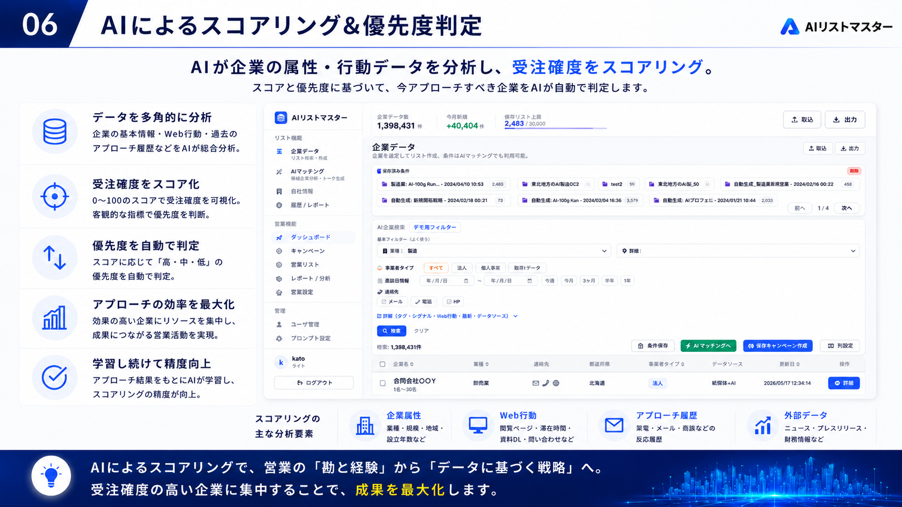
06
AIによるスコアリング＆優先度判定
AIリストマスター
AIが企業の属性・行動データを分析し、受注確度をスコアリング。
スコアと優先度に基づいて、今アプローチすべき企業をAIが自動で判定します。
データを多角的に分析
企業の基本情報・Web行動・過去のアプローチ履歴などをAIが総合分析。
受注確度をスコア化
0〜100のスコアで受注確度を可視化。客観的な指標で優先度を判断。
優先度を自動で判定
スコアに応じて「高・中・低」の優先度を自動で判定。
アプローチの効率を最大化
効果の高い企業にリソースを集中し、成果につながる営業活動を実現。
学習し続けて精度向上
アプローチ結果をもとにAIが学習し、スコアリングの精度が向上。
スコアリングの主な分析要素
企業属性
業種・規模・地域・設立年数など
Web行動
閲覧ページ・滞在時間・資料DL・問い合わせなど
アプローチ履歴
架電・メール・商談などの反応履歴
外部データ
ニュース・プレスリリース・財務情報など
AIによるスコアリングで、営業の「勘と経験」から「データに基づく戦略」へ。受注確度の高い企業に集中することで、成果を最大化します。
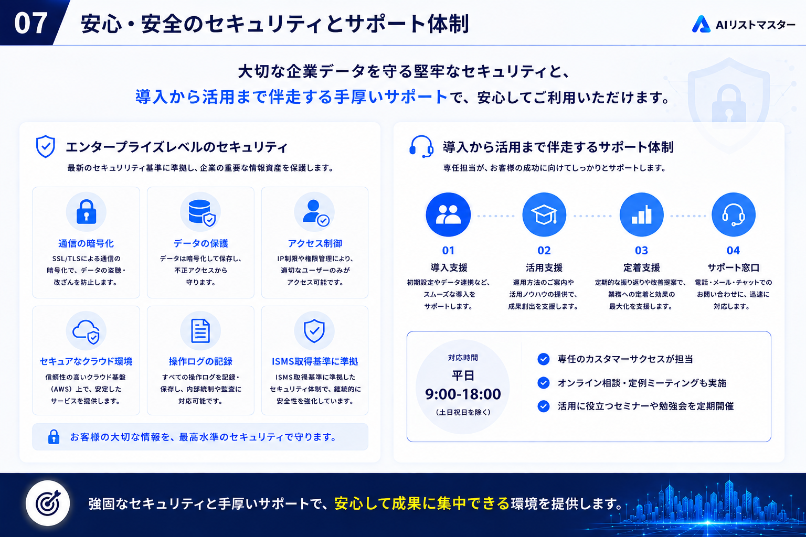
07
安心・安全のセキュリティとサポート体制
AIリストマスター
大切な企業データを守る堅牢なセキュリティと、
導入から活用まで伴走する手厚いサポートで、安心してご利用いただけます。
エンタープライズレベルのセキュリティ
最新のセキュリティ基準に準拠し、企業の重要な情報資産を保護します。
通信の暗号化
SSL/TLSによる通信の暗号化で、データの盗聴・改ざんを防止します。
データの保護
データは暗号化して保存し、不正アクセスから守ります。
アクセス制御
IP制限や権限管理により、適切なユーザーのみがアクセス可能です。
セキュアなクラウド環境
信頼性の高いクラウド基盤（AWS）上で、安定したサービスを提供します。
操作ログの記録
すべての操作ログを記録・保存し、内部統制や監査に対応可能です。
ISMS取得基準に準拠
ISMS取得基準に準拠したセキュリティ体制で、継続的に安全性を強化しています。
お客様の大切な情報を、最高水準のセキュリティで守ります。
導入から活用まで伴走するサポート体制
専任担当が、お客様の成功に向けてしっかりとサポートします。
01
導入支援
初期設定やデータ連携など、スムーズな導入をサポートします。
02
活用支援
運用方法のご案内や活用ノウハウの提供で、成果創出を支援します。
03
定着支援
定期的な振り返りや改善提案で、業務への定着と効果の最大化を支援します。
04
サポート窓口
電話・メール・チャットでのお問い合わせに、迅速に対応します。
対応時間
平日
9:00-18:00
（土日祝日を除く）
専任のカスタマーサクセスが担当
オンライン相談・定例ミーティングも実施
活用に役立つセミナーや勉強会を定期開催
強固なセキュリティと手厚いサポートで、安心して成果に集中できる環境を提供します。
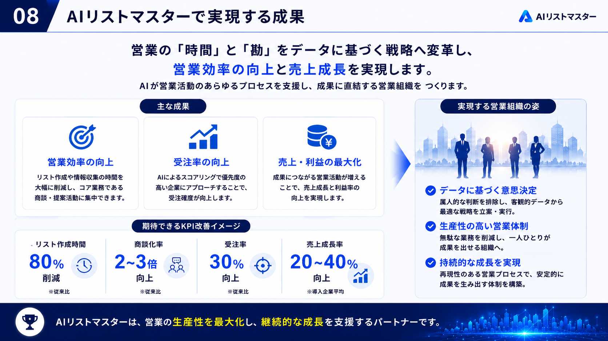
08
AIリストマスターで実現する成果
AIリストマスター
営業の「時間」と「勘」をデータに基づく戦略へ変革し、
営業効率の向上と売上成長を実現します。
AIが営業活動のあらゆるプロセスを支援し、成果に直結する営業組織を つくります。
営業効率の向上
リスト作成や情報収集の時間を大幅に削減し、コア業務である商談・提案活動に集中できます。
受注率の向上
AIによるスコアリングで優先度の高い企業にアプローチすることで、受注確度が向上します。
売上・利益の最大化
成果につながる営業活動が増えることで、売上成長と利益率の向上を実現します。
80%
削減
※従来比
リスト作成時間
2〜3倍
向上
※従来比
商談化率
30%
向上
※従来比
受注率
20〜40%
向上
※導入企業平均
売上成長率
データに基づく意思決定
属人的な判断を排除し、客観的データから最適な戦略を立案・実行。
生産性の高い営業体制
無駄な業務を削減し、一人ひとりが成果を出せる組織へ。
持続的な成長を実現
再現性のある営業プロセスで、安定的に成果を生み出す体制を構築。
AIリストマスターは、営業の生産性を最大化し、継続的な成長を支援するパートナーです。
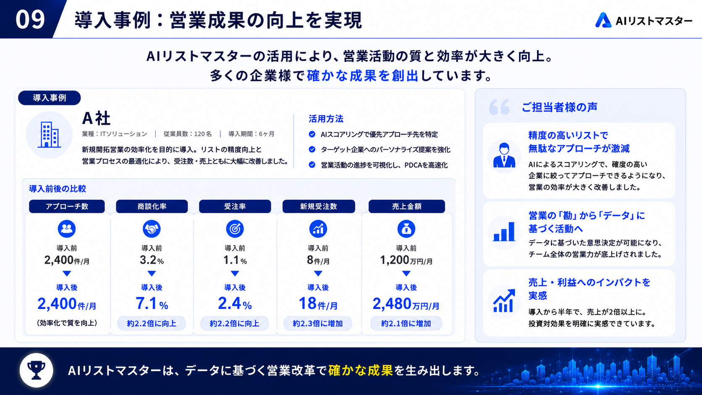
09
導入事例：営業成果の向上を実現
AIリストマスター
AIリストマスターの活用により、営業活動の質と効率が大きく向上。
多くの企業様で確かな成果を創出しています。
A社
業種：ITソリューション ｜ 従業員数：120名 ｜ 導入期間：6ヶ月
新規開拓営業の効率化を目的に導入。リストの精度向上と営業プロセスの最適化により、受注数・売上ともに大幅に改善しました。
活用方法
AIスコアリングで優先アプローチ先を特定
ターゲット企業へのパーソナライズ提案を強化
営業活動の進捗を可視化し、PDCAを高速化
アプローチ数
導入前
2,400件/月
導入後
2,400件/月
（効率化で質を向上）
商談化率
導入前
3.2%
導入後
7.1%
約2.2倍に向上
受注率
導入前
1.1%
導入後
2.4%
約2.2倍に向上
新規受注数
導入前
8件/月
導入後
18件/月
約2.3倍に増加
売上金額
導入前
1,200万円/月
導入後
2,480万円/月
約2.1倍に増加
ご担当者様の声
精度の高いリストで無駄なアプローチが激減
AIによるスコアリングで、確度の高い企業に絞ってアプローチできるようになり、営業の効率が大きく改善しました。
営業の「勘」から「データ」に基づく活動へ
データに基づいた意思決定が可能になり、チーム全体の営業力が底上げされました。
売上・利益へのインパクトを実感
導入から半年で、売上が2倍以上に。投資対効果を明確に実感できています。
AIリストマスターは、データに基づく営業改革で確かな成果を生み出します。
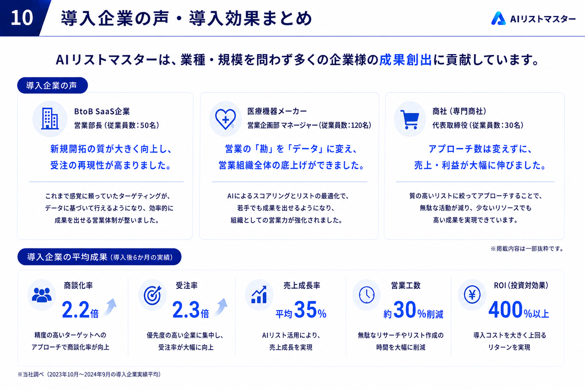
10
導入企業の声・導入効果まとめ
AIリストマスター
AIリストマスターは、業種・規模を問わず多くの企業様の成果創出に貢献しています。
BtoB SaaS企業
営業部長（従業員数：50名）
新規開拓の質が大きく向上し、受注の再現性が高まりました。
これまで感覚に頼っていたターゲティングが、データに基づいて行えるようになり、効率的に成果を出せる営業体制が整いました。
医療機器メーカー
営業企画部 マネージャー（従業員数：120名）
営業の「勘」を「データ」に変え、営業組織全体の底上げができました。
AIによるスコアリングとリストの最適化で、若手でも成果を出せるようになり、組織としての営業力が強化されました。
商社（専門商社）
代表取締役（従業員数：30名）
アプローチ数は変えずに、売上・利益が大幅に伸びました。
質の高いリストに絞ってアプローチすることで、無駄な活動が減り、少ないリソースでも高い成果を実現できています。
商談化率
2.2倍
精度の高いターゲットへのアプローチで商談化率が向上
受注率
2.3倍
優先度の高い企業に集中し、受注率が大幅に向上
売上成長率
平均35%
AIリスト活用により、売上成長を実現
営業工数
約30%削減
無駄なリサーチやリスト作成の時間を大幅に削減
ROI（投資対効果）
400%以上
導入コストを大きく上回るリターンを実現
※当社調べ（2023年10月〜2024年9月の導入企業実績平均）
※掲載内容は一部抜粋です。
AIリストマスターは、営業の生産性を最大化し、継続的な成長を支援するパートナーです。
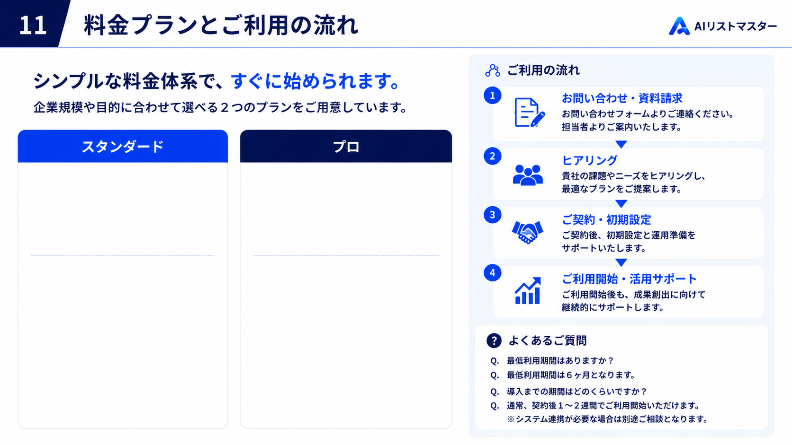
11
料金プランとご利用の流れ
AIリストマスター
シンプルな料金体系で、すぐに始められます。
企業規模や目的に合わせて選べる２つのプランをご用意しています。
スタンダード
プロ
ご利用の流れ
お問い合わせ・資料請求
お問い合わせフォームよりご連絡ください。担当者よりご案内いたします。
ヒアリング
貴社の課題やニーズをヒアリングし、最適なプランをご提案します。
ご契約・初期設定
ご契約後、初期設定と運用準備をサポートいたします。
ご利用開始・活用サポート
ご利用開始後も、成果創出に向けて継続的にサポートします。
よくあるご質問
Q. 最低利用期間はありますか？
Q. 最低利用期間は6ヶ月となります。
Q. 導入までの期間はどのくらいですか？
Q. 通常、契約後1〜2週間でご利用開始いただけます。※システム連携が必要な場合は別途ご相談となります。
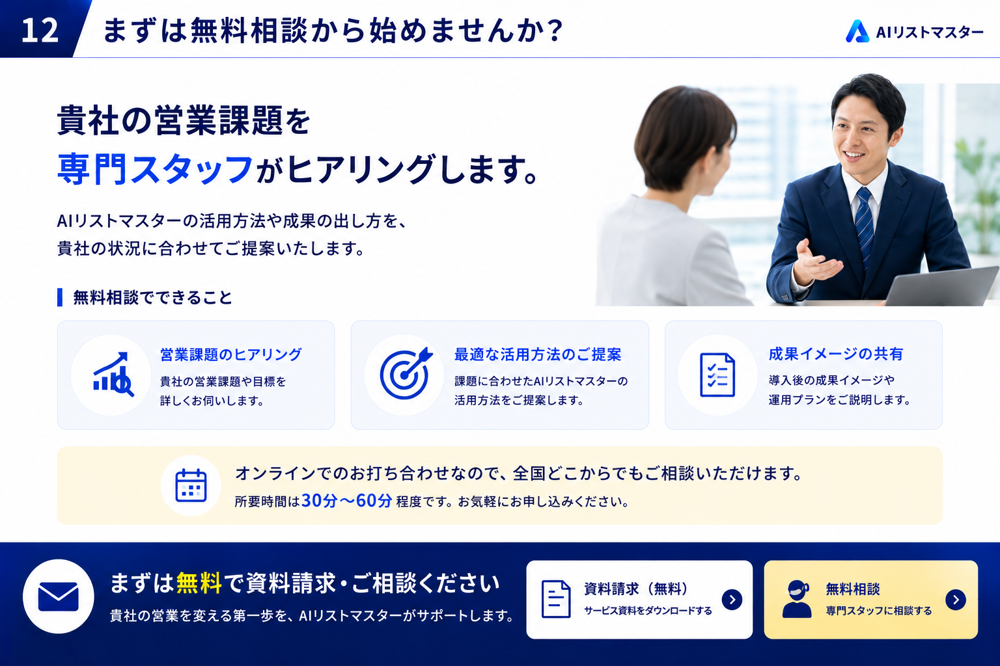
12
まずは無料相談から始めませんか？
AIリストマスター
貴社の営業課題を
専門スタッフがヒアリングします。
AIリストマスターの活用方法や成果の出し方を、貴社の状況に合わせてご提案いたします。
無料相談でできること
営業課題のヒアリング
貴社の営業課題や目標を詳しくお伺いします。
最適な活用方法のご提案
課題に合わせたAIリストマスターの活用方法をご提案します。
成果イメージの共有
導入後の成果イメージや運用プランをご説明します。
オンラインでのお打ち合わせなので、全国どこからでもご相談いただけます。
所要時間は30分〜60分 程度です。お気軽にお申し込みください。
実際の画面をご覧いただき、提案させていただきます！
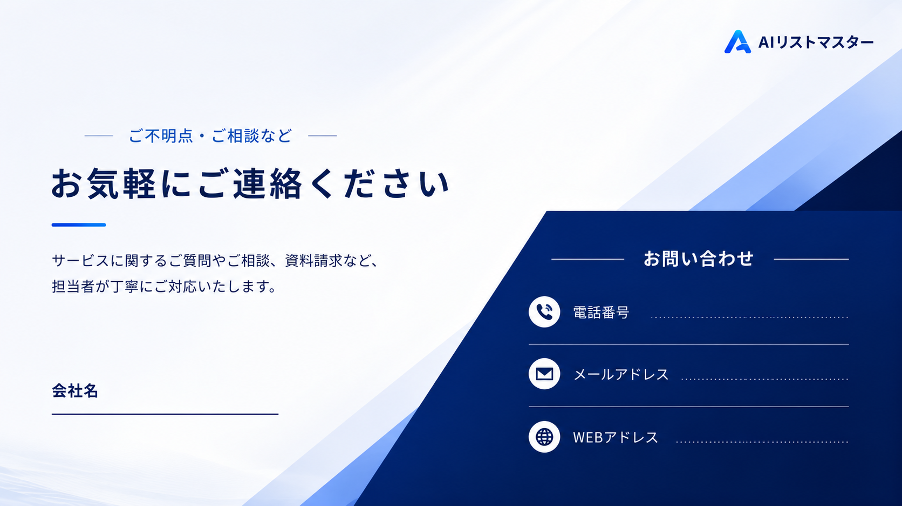
AIリストマスター
ご不明点・ご相談など
お気軽にご連絡ください
サービスに関するご質問やご相談、資料請求など、
担当者が丁寧にご対応いたします。
会社名
お問い合わせ